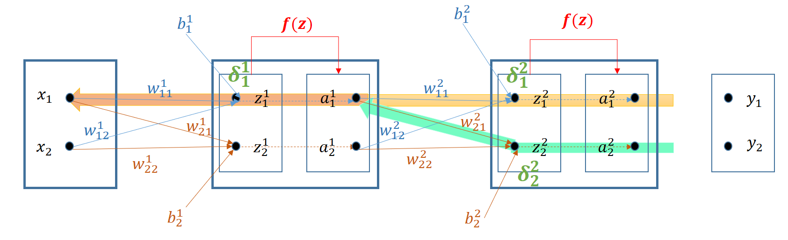

Redes Neuronales - Modelo MultiCapa#
El algoritmo de retropropagación que permite entrenar una red multicapa se introduce en 1970, pero no es hasta 1986 con el artículo de [Rumelhart et al., 1986] cuando se aprecia su potencial. Permitiendo, por ejemplo, clasificar conjuntos donde las clases no están linealmente separadas.
import pandas as pd
from IPython import display
import numpy as np
import matplotlib.pyplot as plt
Estructura general del modelo#
Definición de la red de un Perceptrón Multicapa o Redes densas#
Se dispone de un conjunto de capas \(\{0,..., l, ..., L\}\) donde 0 es la capa de entrada, L la de salida y el resto de capas \(0<l<L\) son las capas intermedias u ocultas. Una capa \(l-1\) tiene conectadas todas sus neuronas con cada una de las neuronas de la capa siguiente \(l\), por tanto harán falta L matrices de Pesos y Bias para configurar la red:
En general bastarán con 1 o 2 capas ocultas para definir un perceptrón.

Proceso de activación (forward)#
El proceso de activación transforma una observación \(\vec{x}\) en la probabilidad final de la red. Implica concatenar procesos de ponderación lineal y activación aplicados a la salida de la capa anterior:
Siendo \(\bar{a}^{l-1} = \bar{x}\) en la primera capa si \(l=1\).
El proceso matricial de la activación en una red densa multicapa es:
Sabiendo que si \(l=1\) entonces \(A^{l-1} = X\)
Proceso de entrenamiento#
Las matrices \(W^l\) y \(B^l\) se entrenan de forma similar al proceso bicapa:
Matricialmente el proceso de entrenamiento para N observaciones en el conjunto X es:
Pero cambia la obtención de \(\bar{\delta}^l\) que es necesario calcular primero en \(l=L\) y luego ir ‘progapando’ hacia atrás. Para justificar de una manera sencilla el proceso de retropropagación se parte de un ejemplo lo más sencillo posible de red multicapa:

El superindice se utiliza aquí en la notación para identificar la capa del número, vector o matriz. Para no confudir donde se emple un cuadrado aparecerá en negrita y con tamaño mayor.
Retropropagación (back propagation)#
El entrenamiento que produce una observación \(\bar{x}=(x_1, x_2)\) en los pesos de la segunda capa conduce a resultados similares a los obtenidos en el modelo bicapa. Para seguir la aplicación de la regla de la cadena las derivadas de la función de pérdida
se puede seguir hacia atrás el grafo de la red hasta las variables que se está derivando.

Para obtener \(\frac{\partial C}{\partial w^2_{11}}\) se sigue el camino amarillo:
De igual forma se obtendría
Y para obtener \(\frac{\partial C}{\partial w^2_{21}}\) se sigue el camino verde:
De igual forma se obtendría
Lo que permite obtener los gradientes de la capa 2:
El entrenamiento de la capa 1, por ejemplo para optimizar el peso \(w^1_{11}\) requiere dos caminos simultáneos (verde y amarillo) como se puede comprobar en el siguiente gráfico:
{kind=link}
Desarrollando cada uno de los sumandos:
Permite poner:
De igual forma se tiene:
Para optimizar el peso \(w^1_{21}\) requiere también dos caminos simultáneos (verde y amarillo) como se puede comprobar en el siguiente gráfico:

Desarrollando cada uno de los sumandos:
Permite poner:
De igual forma se tiene:
Resumiendo, el gradiente \(\bar{\delta}^1\) se puede poner:
Graficamente se puede observar que el gradiente \(\bar{\delta}\) se transmite desde la última capa hasta la capa 1 funcionando la red densa de forma inversa. Está transformación lineal para pasar de \(\bar{\delta}^2\) a \(\bar{\delta}^1\) tiene lugar con una matriz \(W^2\) traspuesta con respecto al proceso de activación.

Finalmente las formulas que permiten obtener los gradientes \(\bar{\delta}\) en una capa \(l < L\) para una observación \(\bar{x}\) o para un bloque de observaciones \(X\) es:
El Perceptron Multicapa de la librería sk-learn#
https://scikit-learn.org/stable/modules/generated/sklearn.neural_network.MLPClassifier.html
El perceptrón multicapa está implementado en la librería sk-learn en la clase MLPClassifier de neural_network
Los parámetros de entrada más importantes son:
hidden_layer_sizes : Es una tupla con la longitud de las capas ocultas (la longitud de la tupla será = n_layers - 2). Por defecto adopta el valor (100,)
activation : funciones de activación soportadas {‘identity’, ‘logistic’, ‘tanh’, ‘relu’}, por defecto se usa ’relu’. La identidad (\(f(x)=x\)) se utiliza para probar el cuello de botella en la compresión de las capas profundas. Las sucesivas capas profundas comprimen la información para quedarse con la parte relevante de la información que soporta la clasificación.
solver procedimiento de optimización {‘lbfgs’, ‘sgd’, ‘adam’}, default=’adam’. El procedimiento ‘adam’ funciona bastante bien en conjuntos de datos relativamente grandes (con miles de muestras de entrenamiento o más). Sin embargo, para conjuntos de datos pequeños, ‘lbfgs’ puede converger más rápido y funcionar mejor.
batch_size Tamaño de minilotes. Si ‘lbfgs’, el clasificador no usará minibatch.
learning_rate_init Ratio de aprendizaje, defecto=0.001
Algunos parametros de salida a consultar:
best_loss_ : mínimo coste encontrado.
coefs_ y intercepts_ : matrices de pesos y bias.
n_features_in_, n_layers_ y n_outputs_ : nodos de entrada, número de capas y nodos de salida
Algunos métodos de más uso:
fit(X, y) : Ajusta el modelo con las matrices X e y.
get_params([deep]) : Devuelve los parámetros del estimador
partial_fit(X, y[, classes]) : actualiza el modelo con una iteración sencilla con los datos aportados
predict(X) : devuelve las etiquetas predichas y a partir de una matriz de características X.
predict_log_proba(X) : da el logaritmo de probabilidades estimadas.
predict_proba(X) : da la estimación de etiquetas en probabilidades.
score(X, y[, sample_weight]) : devuelve la exactitud (accuracy) de un conjunto de datos y etiquetas de prueba.
set_params(**params) : Establece los parámetros del estimador
Observaciones#
El método clásico de descenso de gradiente necesita atravesar todos los datos de entrenamiento cada vez que se actualizan los parámetros del modelo. Cuando N es muy grande, requiere enormes recursos de cálculo y tiempo de cálculo, lo que básicamente no es factible en el proceso real.
Para resolver este problema, el descenso de gradiente estocástico (SGD) utiliza la pérdida de una sola muestra de entrenamiento para aproximar la pérdida promedio.
El método lbfgs usa un método quasi-Newton. Mientras el método de gradiente descenso, que sólo usa las derivadas primeras, los métodos de Newton son de segundo orden y usan las derivadas parciales segundas, pero tiene el inconveniente de ser muy costosos en proceso. Una alternativa son las aproximaciones quasi-Newton como por ejemplo la fórmula de Broyden-Fletcher-Goldfarb-Shanno (BFGS).
Inicialmente, las redes neuronales solo tenían tres tipos de capas: ocultas, de entrada y de salida. Estas tres capas se conocen como capas densas porque cada neurona está completamente conectada a la siguiente capa. Y las neuronas son solo soportes, no hay conexiones directas.
Las redes neuronales modernas tienen muchos tipos de capas adicionales. Además de las capas densas clásicas, ahora también tenemos capas de abandono, convolucionales, de agrupación y recurrentes. Las capas densas a menudo se entremezclan con estos otros tipos de capas.
Información Complementaria: En siguientes cuadernos, sobre redes convolucionales, se explica con más detalle alguna de estas redes y la libreria Pytorch para trabajar con ellas
Algunas observaciones al diseño del número de capas y neuronas del perceptron (*)#
Poniendo el foco en las capas densas hay que determinar dos parámetros: el número de capas ocultas y el número de neuronas por capa.
Los problemas que requieren más de dos capas ocultas son raros fuera del aprendizaje profundo. Dos o menos capas suelen ser suficientes en conjuntos de datos simples. Sin embargo, con conjuntos de datos complejos que involucran series de tiempo o visión por computadora, puede requerir capas adicionales.
El requisito de nº de capas ocultas puede ser:
Ninguna: en problemas linealmente separables.
1: aproxima cualquier función que contenga un mapeo continuo de un espacio finito a otro.
2: puede representar un límite de decisión arbitrario con precisión arbitraria con funciones de activación racionales y puede aproximar cualquier mapeo suave con cualquier precisión.
>2: las capas adicionales pueden aprender representaciones complejas (una especie de ingeniería de características automática).
El número de neuronas en las capas ocultas
El uso de muy pocas neuronas en las capas ocultas dará como resultado el underfitting. El ajuste insuficiente ocurre cuando hay muy pocas neuronas en las capas ocultas para detectar adecuadamente las señales en un conjunto de datos complicado.
El uso de demasiadas neuronas en las capas ocultas puede dar lugar a varios problemas. En primer lugar, demasiadas neuronas en las capas ocultas pueden provocar un sobreajuste (overfitting). El sobreajuste ocurre cuando la red neuronal tiene tanta capacidad de procesamiento de información que la cantidad limitada de información contenida en el conjunto de entrenamiento no es suficiente para entrenar todas las neuronas en las capas ocultas. Un segundo problema puede ocurrir incluso cuando los datos de entrenamiento son suficientes. Una cantidad excesivamente grande de neuronas en las capas ocultas puede aumentar el tiempo de procesamiento hasta poder hacerlo inviable.
Se suelen usar algunas reglas empíricas como empezar por una capa oculta con un número prefijado de neuronas y luego ir subiendo una a una este número hasta que se alcanza un máximo en el score. Después se puede probar a añadir una nueva capa oculta, prefijando su número de neuronas e ir subiendo este para ver como se comporta el score.
Las capas ocultas junto a la de salida suelen tener una estructura piramidal, de forma que la capa siguiente suele tener menor número de neuronas.
Cuando la capa de entrada tiene pocas neuronas se puede comenzar usando este número en la primera capa oculta e ir uno a uno subiendo su número.
Heaton por ejemplo indica las siguientes reglas empíricas para determinar las neuronas de las capas ocultas:
El número de neuronas ocultas debe estar entre el tamaño de la capa de entrada y el tamaño de la capa de salida.
El número de neuronas ocultas debe ser 2/3 del tamaño de la capa de entrada, más el tamaño de la capa de salida.
El número de neuronas ocultas debe ser inferior al doble del tamaño de la capa de entrada.
(*) [Heaton, 2008]
(*) [Heaton et al., 2017]
Aplicación del Perceptrón Multicapa a la puerta XOR#
Con el concepto de la puerta XOR se genera un conjunto de datos con dos etiquetas no separables linealmente y se realiza su entrenamiento con el perceptron multicapa
Conjunto de datos no separables inspirados en la puerta XOR
La matriz X está formada por las coordenas (x,y) en una trama de valores entre 0 y 1.
La matriz y toma valores 0 ó 1 dependiendo de la zona donde se encuentre el punto (x,y) según la siguiente representación.
Show code cell content
X = []
y = []
for ix in np.linspace(0, 1, 20):
for iy in np.linspace(0, 1, 20):
if (ix <= 0.5 and iy <= 0.5) or (ix>0.5 and iy >0.5):
y.append(0)
else:
y.append(1)
X.append([ix, iy])
y=np.asarray(y)
X=np.asarray(X)
Show code cell source
color=['blue', 'red']
for lbl in np.unique(y):
plt.scatter(X[y==lbl][:,0], X[y==lbl][:,1], c=color[lbl])

## Importación de la clase del perceptrón multicapa
from sklearn.neural_network import MLPClassifier
## Inicialización y creación del objeto clasificador
mlp = MLPClassifier(max_iter=200,activation = 'tanh',solver='lbfgs',random_state=1, hidden_layer_sizes=(4,2))
mlp.fit(X, y)
print("Exactitud del conjunto de entrenamiento: {:.3f}".format(mlp.score(X, y)))
Exactitud del conjunto de entrenamiento: 1.000
mlp.n_features_in_, mlp.hidden_layer_sizes, mlp.n_outputs_, "Total de capas=", mlp.n_layers_
(2, (4, 2), 1, 'Total de capas=', 4)
color=['blue', 'red']
y_pred = mlp.predict(X)
for lbl in np.unique(y_pred):
plt.scatter(X[y_pred==lbl][:,0], X[y_pred==lbl][:,1], c=color[lbl])
Uso del Perceptron Bicapa
No puede realizar la clasificación por no ser separable linealmente
from sklearn.linear_model import Perceptron
blp = Perceptron(tol=None, max_iter=3000, alpha=0.01, random_state=1)
blp.fit(X,y)
Perceptron(alpha=0.01, max_iter=3000, random_state=1, tol=None)In a Jupyter environment, please rerun this cell to show the HTML representation or trust the notebook.
On GitHub, the HTML representation is unable to render, please try loading this page with nbviewer.org.
Perceptron(alpha=0.01, max_iter=3000, random_state=1, tol=None)
color=['blue', 'red']
y_pred = blp.predict(X)
for lbl in np.unique(y_pred):
plt.scatter(X[y_pred==lbl][:,0], X[y_pred==lbl][:,1], c=color[lbl])

Clasificar con el Perceptron Multicapa el conjunto de cifras manuscritas de MNIST#
El conjunto MNIST (por sus siglas en inglés, Modified National Institute of Standards and Technology database) contiene una base de datos de cifras manuscritas (del 0 al 9) tomadas de los empleados de la Oficina del Censo. Está formada por 60.000 registros de entrenamiento y 10.000 de pruebas.
Se descargan los datos de torchvision.datasets por lo que se transforman de tensor pytorch a array numpy.
import torch
from torchvision import datasets, transforms
import torchvision.transforms.functional as fn
# Download and load the test data
w_dataset = datasets.MNIST('data', download=True, train=False, transform=transforms.ToTensor())
dataResized = fn.resize(w_dataset.data, 32,antialias=True)
dataCifar = dataResized.data.numpy()
dataCifar.shape
(10000, 32, 32)
Se toman 2000 y 100 registros del total para el conjunto de entrenamiento y validación
Se cambia la doble dimensión 32x32 aplanando con la función reshape()
Show code cell source
nTrain = 2000
nTest = 100
X_train = np.empty((nTrain, dataCifar.shape[1] * dataCifar.shape[2]), dtype=np.float32)
y_train = [] ## Se crea el array de labels
for i in range(nTrain):
_x, t = w_dataset.__getitem__(i)
y_train.append(t)
X_train[i] = dataCifar[i].reshape((dataCifar.shape[1]*dataCifar.shape[2]))
X_test = np.empty((nTest, dataCifar.shape[1] * dataCifar.shape[2]), dtype=np.float32)
y_test = [] ## Se crea el array de labels
for i in range(nTest):
_x, t = w_dataset.__getitem__(nTrain+i)
y_test.append(t)
X_test[i] = dataCifar[nTrain+i].reshape((dataCifar.shape[1]*dataCifar.shape[2]))
X_train.shape, X_test.shape
((2000, 1024), (100, 1024))
Aspecto de los elementos del conjunto
Show code cell content
def plotCifar(Star, Img, lbl):
fig, axs = plt.subplots(1, 16, figsize=(12,5))
for i in range(16):
axs[i].imshow(dataCifar[Star+i])
axs[i].set_title(lbl[i])
for ax in fig.get_axes():
ax.label_outer()
ax.get_xaxis().set_visible(False)
ax.get_yaxis().set_visible(False)
plotCifar(0, dataCifar, y_train)
Se entrena usando MLPClassifier y el conjunto de entrenamiento
mlp = MLPClassifier(max_iter=200,activation = 'relu',solver='adam',random_state=1, hidden_layer_sizes=(500,100))
mlp.fit(X_train, y_train)
MLPClassifier(hidden_layer_sizes=(500, 100), random_state=1)In a Jupyter environment, please rerun this cell to show the HTML representation or trust the notebook.
On GitHub, the HTML representation is unable to render, please try loading this page with nbviewer.org.
MLPClassifier(hidden_layer_sizes=(500, 100), random_state=1)
y_pred = mlp.predict(X_train)
"Porcentaje de acierto en el conjunto de entrenamiento=", 100*mlp.score(X_train, y_train)
('Porcentaje de acierto en el conjunto de entrenamiento=', 100.0)
Verificación del resultado en el conjunto de
Se puede comprobar alguno de los errores cometidos en predicción
y_pred = mlp.predict(X_test)
"Porcentaje de acierto en el conjunto de pruebas=", 100*mlp.score(X_test, y_test)
('Porcentaje de acierto en el conjunto de pruebas=', 91.0)
plotCifar(2000, dataCifar, y_pred)
Estructura tridimensional de proteinas (AlphaFold)#
[].
El procedimiento seguido ha resultado paradigmático en este tipo de metodologías:

Es posible acceder a un cuaderno Jupyter en Google Colaboratory donde predecir en la red AlphaFold creandose una copia del cuaderno en el Drive de cada usuario desde el enlace:
https://colab.sandbox.google.com/github/deepmind/alphafold/blob/main/notebooks/AlphaFold.ipynb